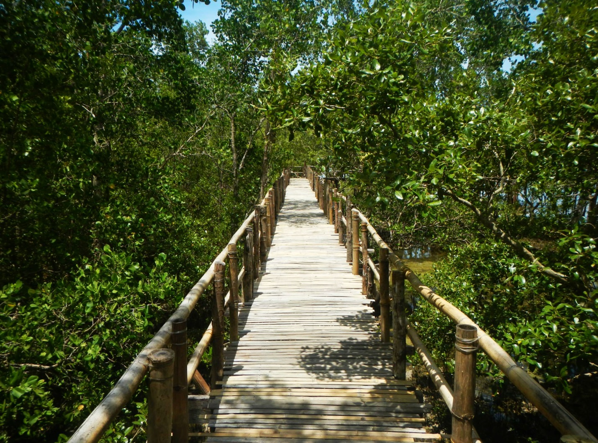
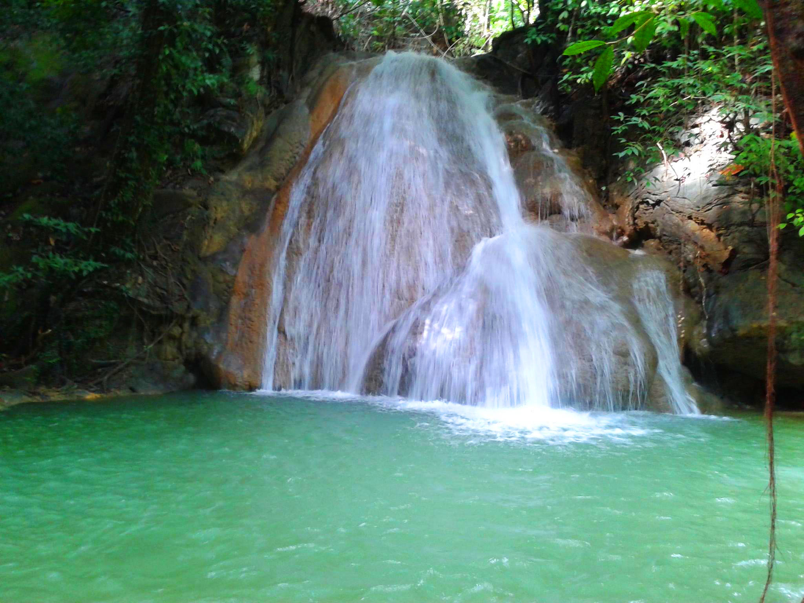
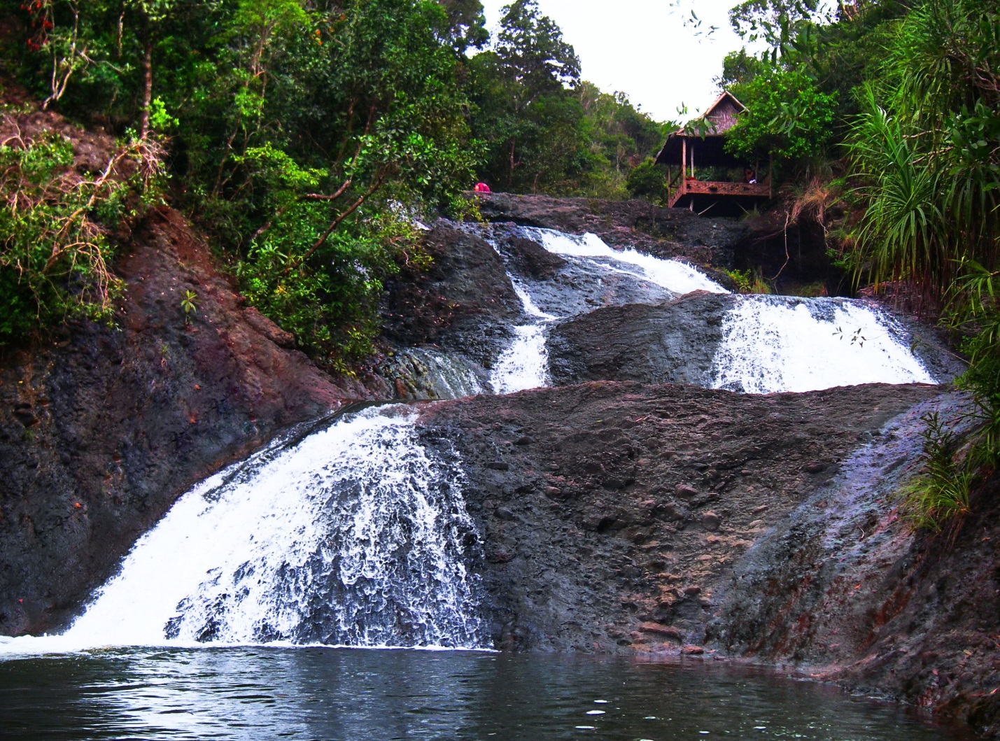
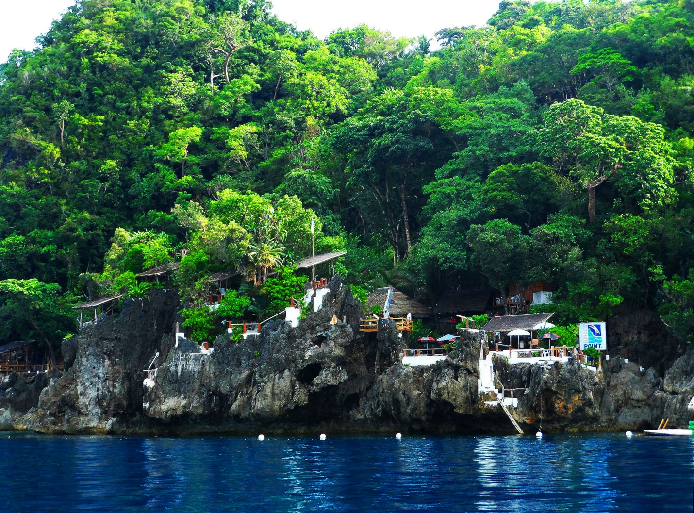
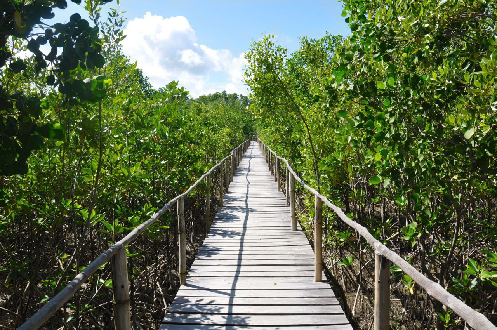
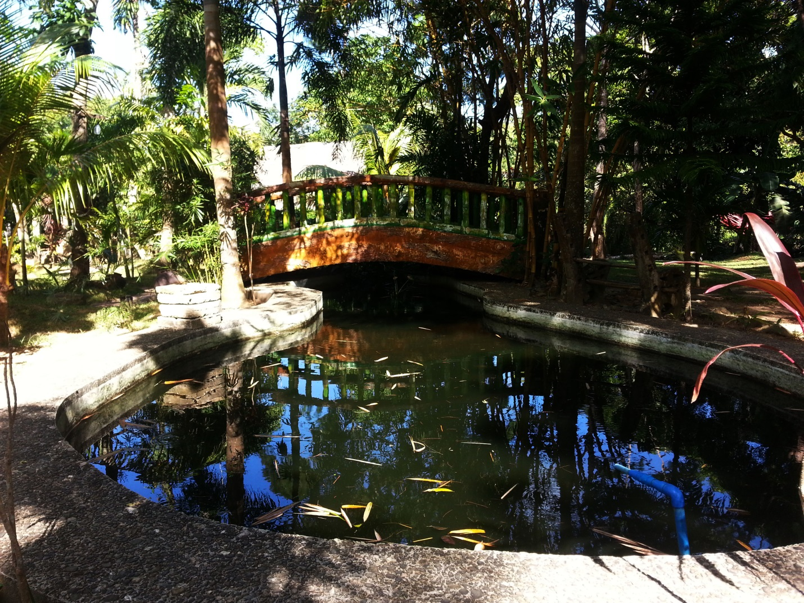

Aklan Itinerary:
Ultimate Travel Guide
A quiet town with many natural wonders waiting to be explored.
The province of Aklan is mainly known for two things: the world famous island of Boracay and Kalibo’s Ati-Atihan Festival. Other than that, it’s rare to hear anything else about it. But what if we told you that the province actually holds several off-the-path locations?
Traveling – it leaves you speechless,
then turns you into a storyteller
- Hinugtan Beach
- Pagatpat Mangrove Park
- Hacienda Maria
- Jawili Falls
- Ariel’s Point
- Bakhawan Eco Park
- Malay Eco Park
Just a short boat ride away from Boracay Island sits Hinugtan—an exclusive beach with powder-fine white sand, towering coconut trees, and a spectacular mountain view. There are no fancy hotels but there are nipa huts that you can rent for only PHP200.
The marine life here is abundant making the place perfect for snorkeling and even fishing. If you’re feeling adventurous, you can also try jumping over jagged cliffs or hiking one of the nearby mountains.

The beach is really peaceful and serene, so it’s ideal for those who want to get away from the madding crowd in Boracay.
Wrapped with a maze of mangroves is the Pagatpat Mangrove Park in Barangay Panilongan, Buruanga, Aklan. The place has connected bamboo bridges where you can stroll along, and admire the trees and fishes below.

There are also several nipa huts with karaoke machines where you can enjoy a drink while singing your favorite songs. The owners of the park even allow visitors to go down the huts to soak their feet or take a dip in the sea.
If you’re looking for something a little more adventurous, then try visiting Hacienda Maria—a newly discovered eco-tourism destination located in Sitio Sapsapon, Brgy. Tigum, Buruanga, Aklan. In order to reach the place, you’ll have to hike two kilometers up a steep mountain, and walk a few more kilometers to tour the whole area. But trust us when we say the struggle is worth it because you get to enjoy everything the place has to offer, starting with the waterfalls.
It doesn’t seem like it, but the deepest part of the waterfall’s base is actually over 10 feet deep, so it’s pretty safe to jump from the rocks.
Another one of Aklan’s many waterfalls is the Jawili Falls, found at Brgy. Jawili in Tangalan, Aklan, approximately 45 minutes away from Kalibo. This waterfall is definitely one of the most unique in the country because of its natural pools cascading to form a gigantic limestone staircase. Spring water pours from one basin to another, creating a series of seven mini waterfalls along its wake. And believe it or not, the entrance fee here is only PHP5!
Like in Hacienda Maria, a quick dip in the pools will tell you that some parts of it can reach as deep as 10 feet. So if ever you get to visit this place, don’t be surprised if you see lots of kids diving from one basin to another.
Batason Point, or more commonly known now as Ariel’s Point, was featured in 2014 as Boracay’s top tourist attraction. But what people don’t know is that it isn’t actually part of Boracay. This famous diving spot is one of the tourist attractions that belongs to the town of Buruanga, which is a completely different place.
The place has three different diving planks. The easiest one is the five-meter level, the other is eight meters high, and the highest plank is a 15-meter dive. For those who are concerned about drowning, you’ll be happy to know that the lifeguards are always ready to assist divers.
There are other activities too, like snorkeling and kayaking. The place also has a restaurant that serves a BBQ lunch buffet and free-flowing drinks, creating a fun, party-like atmosphere.
One tip we can give you is not to buy packages at Boracay, as those are really expensive. Instead, just haggle for a small pump boat from locals in BuruangaSo you can get the same experience for a much cheaper price. Plus, with the rented boat, you can visit other beaches around the area, like Hinugtan Beach and Naasog Point..
Similar to Pagatpat, Bakhawan Eco Park is also a mangrove forest. The 220-hecatre park is actually dubbed as the country’s most successful mangrove reforestation project. And a little fun fact, bakhawan, in the local dialect, actually stands for the word mangrove
The park is a good destination for tourists who just need to take a breather from busy streets and crowded places. Its 1.3-kilometer long bamboo trail passes by several fish and crustacean farms, and ends with a stunning view of the sea.
Here, you can take a rest by their cabanas, and just enjoy the scenery. There’s also a small store that offers snacks and refreshments for those who are tired and hungry from the long walk.
Upon entering the park, you will immediately see a display of a giant fossilized Leatherback Sea Turtle, and a few steps from it, a butterfly garden. Thecrew will help you pick up butterflies by spraying your hands with sugar water. It turns out that while some butterflies love flower nectar, others prefer to eat sugar from rotting fruits.

At the highest point in the park, an amazing view of the town awaits you. On one side, you can look at mountains and the fields
These are just some of the nice vacation spots in Aklan. There are plenty more out there—from fields to rivers, and mountains to natural springs—so no need to worry about running out of places to visit. You can also ask the locals in the area for more information since they know the province best. Some of them might even be nice enough to accompany you.